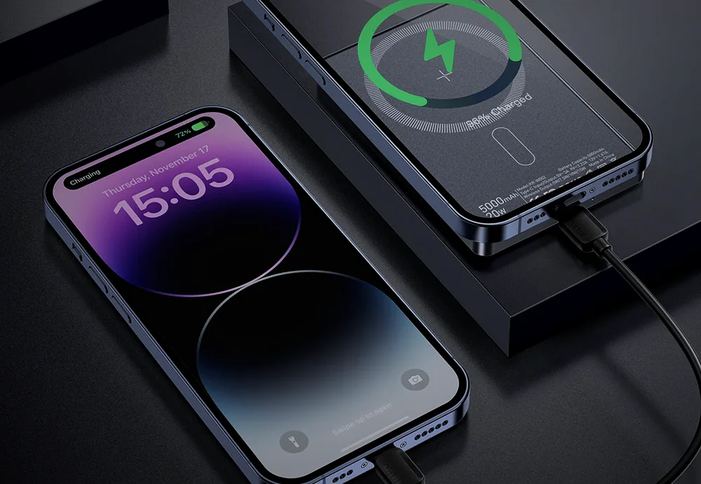
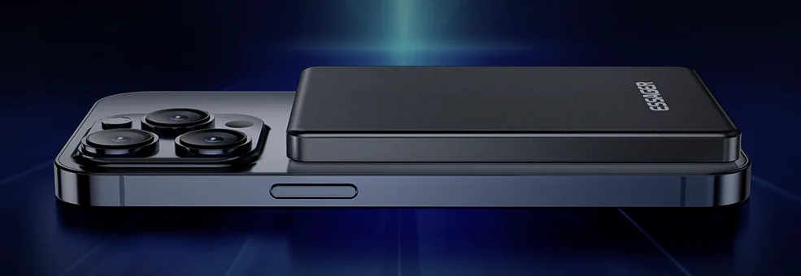
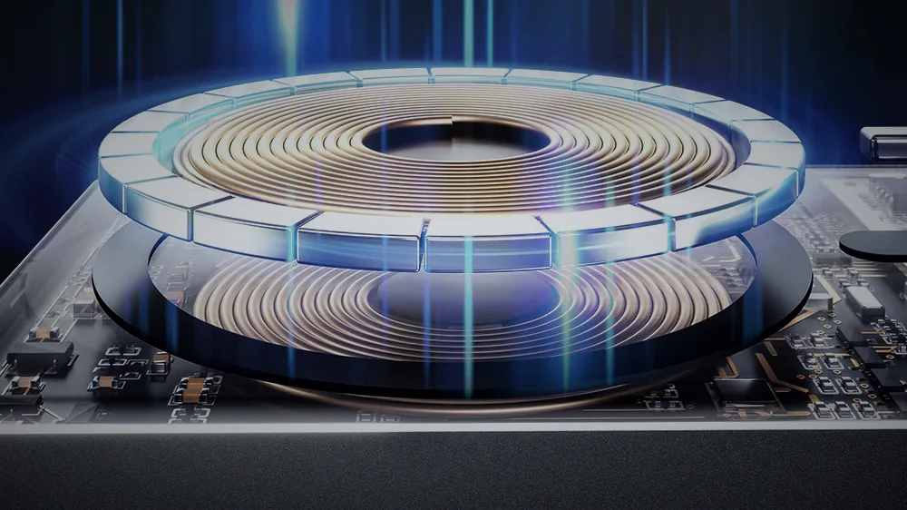
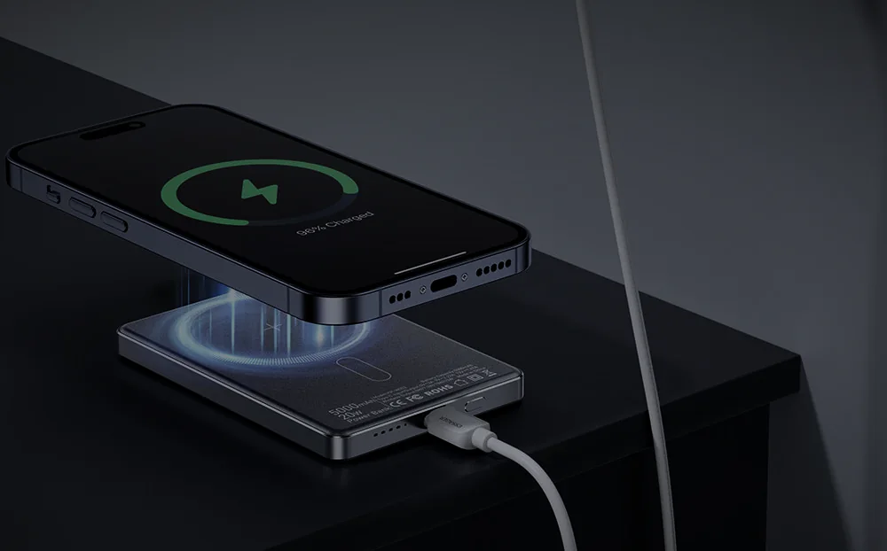
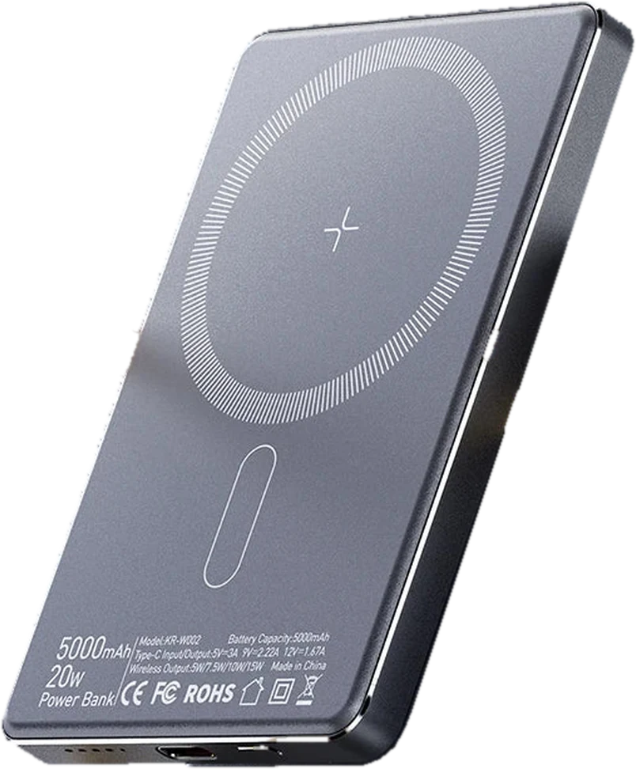
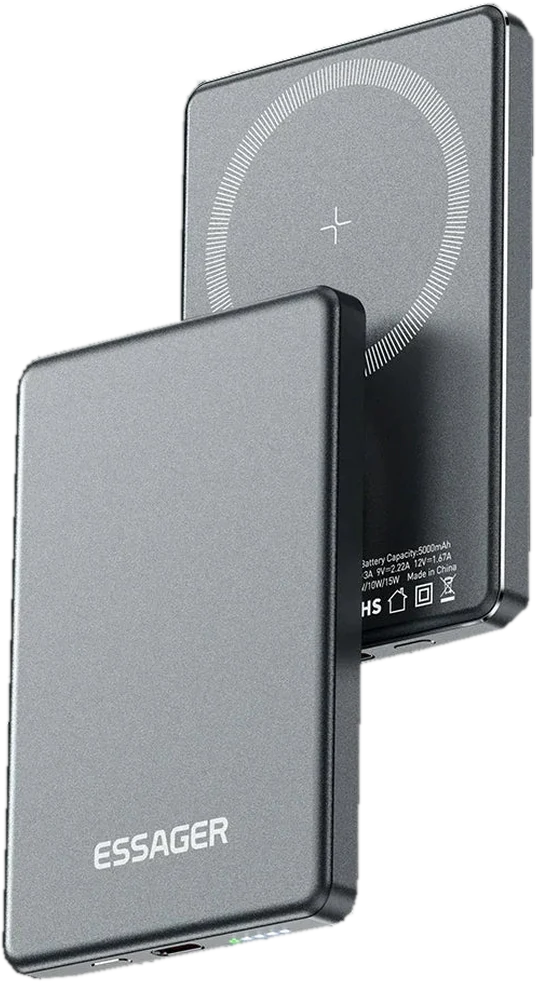

Essager KR-W002 · 18,5 Вт·год · PD 20 Вт
Найкращий павербанк - той,
що ви взяли з собою.
Двадцятитисячна цеглина лежить удома в шухляді, бо носити 400 грамів щодня не буде ніхто. Ця пластина завтовшки 8,8 мм чіпляється магнітом до задньої кришки iPhone і їде з вами скрізь: у метро, на зйомку, в поїзд, в укриття.
Space Gray · Natural Titanium · алюмінієвий сплав

- 8,8ммтовщина корпусу
- 155гвага з магнітами
- 3800GSсила утримання
- 20Втпо USB-C PD
Проблема не в ємності. Проблема в тому, що павербанка немає поруч.
Ємність, яку ви залишили вдома, дорівнює нулю.
правило, дорожче за будь-які мА·годЗгадайте останні п’ять разів, коли телефон показав 6% у найгіршу можливу мить. Скільки з них павербанк був у вас у кишені? Найчастіше відповідь - жодного: він лишився вдома на столі, у другій сумці або сів на полиці, бо ви три тижні про нього не згадували.
Двадцять тисяч міліампер-годин звучать переконливо рівно доти, доки ви не спробуєте носити їх щодня. Чотириста грамів, окремий кабель, окрема кишеня і кожного ранку окреме рішення - брати чи не брати. Через тиждень таке рішення завжди ухвалюється на користь «сьогодні обійдусь».
Тонка магнітна пластина знімає це рішення взагалі. Вона не лежить у сумці окремим предметом, вона прилипає до телефона ззаду і стає його частиною. Носити доводиться не павербанк, а трохи товщий телефон.
Товщина, яку перестаєш помічати на третій день.
102,3 × 68,5 мм · 155 г · алюмінієвий сплав
Корпус зроблений з алюмінієвого сплаву з матовим піскоструменем, тому він не ковзає в долоні й не збирає відбитки так, як глянцевий пластик. Разом з iPhone виходить близько 16,6 мм загальної товщини - приблизно як смартфон у звичайному чохлі-книжці.
Скажемо чесно і про вагу: 155 грамів - це не пір’їнка, це маса ще одного телефона. Різниця тільки в тому, що ці 155 грамів ви носите на телефоні, а не окремим предметом у руці, і саме тому вони не дратують уже на третій день.

iPhone 8,8 мм корпусу3800 гаус.
Він не з’їжджає, коли ви йдете.
Кільце неодимових магнітів класу N52 - найсильнішого з побутових.
Сама по собі цифра мало що каже, тому переведемо її в побут. Павербанк не сповзає, коли ви витягуєте телефон із кишені джинсів, підносите його до вуха під час дзвінка або знімаєте відео однією рукою на ходу. Він тримається так само, як тримається магнітний тримач в авто, тільки притиснутий до всієї задньої площини.
Магніти дістають крізь чохол завтовшки до 5 мм - силіконовий, шкіряний, більшість прозорих. Крізь товсті протиударні корпуси з металевими вставками не дістануть. Якщо у вас Android, потрібен чохол із вбудованим кільцем MagSafe, інакше лишається кабель.

кільце N52 · 3800 ± 200 GS котушка до 15 ВтОдин порт, дві швидкості, два пристрої одночасно.
Колір індикатора на торці показує, що саме зараз відбувається, і це та дрібниця, якої зазвичай бракує.
15 Втбез дроту, через магніт
Кладете телефон на пластину - магніт сам ловить центр котушки, промахнутись повз неможливо. Потужність підбирається під пристрій, від 5 до 15 ват.
- iPhone 12-17 15 Вт
- годинник, навушники 5 Вт
- ККД передачі ≥ 70%
20 Втпо кабелю, USB-C Power Delivery
Той самий порт віддає до 20 ват і стільки ж приймає на вхід, тому павербанк набирає повну ємність приблизно за півтори години від звичайного 20-ватного блока.
- 5 В / 3 А 15 Вт
- 9 В / 2,22 А 20 Вт
- 12 В / 1,67 А 20 Вт
Магніт і кабель працюють паралельно. Телефон лежить зверху на пластині, навушники або годинник висять на дроті збоку - віддача йде на обидві лінії, вибирати не треба.

вхід 20 Вт з розетки вихід 15 Вт на телефонУ розетці він працює як звичайна бездротова зарядка.
Наскрізне живлення означає, що павербанк можна взагалі не знімати з розетки: струм іде крізь нього до телефона, а власна батарея добирає своє паралельно. Вранці повні обидва, а на тумбочці лежить один кабель замість трьох.
Саме через цю функцію такі пластини перестають бути «річчю на всякий випадок» і переїжджають у щоденний побут: вдень вона на телефоні, вночі - під ним.
Скільки це насправді зарядок.
На корпусі написано 5000 мА·год - це ємність самих елементів при 3,7 вольта, тобто 18,5 Вт·год. До телефона доходить менше, і це стосується будь-якого павербанка у світі: частина енергії йде на підняття напруги до 5 вольт, ще частина стає теплом у котушці, якщо ви заряджаєте без дроту.
Виробник вказує реальну ємність близько 3500 мА·год і ККД бездротової передачі не менше 70%. Звідси приблизні, але правдиві цифри:
| Пристрій | По кабелю | Через магніт |
|---|---|---|
| iPhone SE, 13 mini≈ 2400 мА·год | ~1,4 | ~1,0 |
| iPhone 15, 16, 17≈ 3300-3700 мА·год | ~1,0 | ~0,7 |
| iPhone 16 Pro Max≈ 4700 мА·год | ~0,75 | ~0,5 |
| AirPods з кейсом≈ 500 мА·год | 10+ | 7+ |
Це оцінка, а не обіцянка. Реальні цифри залежать від температури, якості кабелю і від того, чи користуєтесь ви телефоном під час зарядки. Взимку на вулиці буде помітно менше, бо літієві батареї не люблять холод. Але одну повну зарядку сучасного iPhone ця пластина дає стабільно, і саме на це варто розраховувати.
Не «на всякий випадок», а конкретні вечори.
- Дорога
Поїзд Київ - Львів, розетка одна на дві полиці, і вона вже зайнята ноутбуком сусіда.
- Кав’ярня
Дві години дзвінків і карт, а єдина вільна розетка - за столиком, за яким уже хтось сидить.
- Тривога
Укриття або підвал, коли все затягнулось, а телефон - єдиний зв’язок з тими, хто лишився нагорі.
- Відключення
Світло вимкнули за графіком на вісім годин, і саме сьогодні велика батарея стоїть розряджена.
- Зйомка
Сорок хвилин відео 4K з’їдають половину заряду iPhone швидше, ніж ви встигаєте це помітити.
- Літак
18,5 Вт·год - це вчетверо менше за авіаційну межу в 100 Вт·год, тому в ручній поклажі питань не буде.
Шість рівнів захисту і 60 градусів як стеля.
Контролер стежить за температурою, напругою і струмом та зрізає потужність, щойно щось виходить за межу. Це не пункт для галочки: бездротова передача завжди гріє котушку, і саме тепловий захист відрізняє нормальний павербанк від дешевої підробки без маркування.
- коротке замикання
- перегрів
- перенапруга
- надлишковий струм
- перезаряд
- статика

Маркування нанесено на самому корпусі
Повні характеристики
- Модель
- Essager KR-W002
- Ємність
- 5000 мА·год (18,5 Вт·год), реальна віддача ≈ 3500 мА·год
- Тип елементів
- літій-полімерні
- Бездротова віддача
- 5 / 7,5 / 10 / 15 Вт, ККД ≥ 70%
- Робочий зазор
- до 5 мм, тобто крізь більшість чохлів
- Магніти
- неодим N52, 3800 ± 200 GS
- Вихід USB-C
- 5 В / 3 А · 9 В / 2,22 А · 12 В / 1,67 А, до 20 Вт PD
- Вхід USB-C
- до 20 Вт, повний заряд ≈ 1,5 години
- Одночасна робота
- магніт і кабель разом, два пристрої
- Наскрізна зарядка
- є
- Індикація
- 4 світлодіоди по 25%; зелений - бездротова, синій - кабель
- Розміри
- 102,3 × 68,5 × 8,8 мм
- Вага
- 155 г
- Матеріали
- алюмінієвий сплав, ABS, полікарбонат
- Кольори
- Space Gray, Natural Titanium
- Сумісність
- iPhone 12-17 і чохли MagSafe; Android - з магнітним кільцем або по кабелю
- У коробці
- павербанк, кабель USB-A → USB-C 0,5 м
Кому цей павербанк не підійде.
- Тим, кому треба живити ноутбук. Тут максимум 20 ват, а робочому ноутбуку потрібно від 60. Дивіться в бік моделей на 20 000 мА·год і 100 Вт.
- Тим, хто шукає запас на дві-три доби. 18,5 Вт·год - це один активний день, не більше. Для довгих відключень потрібна зарядна станція, а не пластина.
- Власникам Android без магнітного чохла. Пристрій працюватиме, але тільки по кабелю, і весь сенс магніту зникає.
- Тим, хто носить масивний протиударний чохол. Крізь 6-8 мм пластику з металевими вставками магніт просто не дотягнеться.
Він для тих, хто вже втомився носити цеглину і просто хоче, щоб телефон не сідав до вечора.
Те, що зазвичай запитують перед покупкою
Він сильно гріється?
Помітно теплішає під час бездротової зарядки, і це нормально для будь-якої котушки: частина енергії за законами фізики стає теплом. Якщо корпус доходить до 60 °C, контролер сам знижує потужність, тому перегріти телефон не вийде. По кабелю нагрів майже непомітний.
Чи пустять з ним у літак?
Так. Обмеження авіакомпаній - 100 Вт·год без окремого погодження, а тут 18,5 Вт·год, тобто із запасом. Як і будь-яку літієву батарею, його возять лише в ручній поклажі, у багаж здавати не можна.
Працює з Android?
По кабелю - так, з будь-яким пристроєм на USB-C. Магнітом - лише якщо на телефоні чохол із вбудованим кільцем MagSafe або наклеєне металеве кільце: самі по собі Android-смартфони магнітів у корпусі не мають, за винятком моделей з підтримкою Qi2.
Можна заряджати павербанк і телефон одночасно?
Так, це і є наскрізна зарядка. Вставляєте кабель у розетку, кладете телефон зверху на магніт, і живлення йде на обидва. Це основний нічний сценарій використання.
Скільки він заряджається сам?
Приблизно півтори години від блока на 20 Вт. Від старої зарядки на 5 Вт - близько чотирьох, тому блок краще брати нормальний, з підтримкою Power Delivery.
Що в коробці?
Павербанк, кабель USB-A → USB-C довжиною 0,5 метра і сама коробка. Зарядного блока немає, це стандартна практика для цієї категорії.
Магніт не зіпсує телефон або картки?
Телефону нічого не буде: iPhone від дванадцятої серії сам розрахований на магнітне кріплення. А от банківські картки зі старою магнітною смугою і готельні ключі-картки краще тримати в іншому відділенні гаманця, це стосується будь-яких магнітних аксесуарів.

Тонкий настільки, що ви перестанете про нього думати.
Він просто живе на задній кришці телефона і не дає йому сісти. Актуальну ціну, кольори та відгуки покупців дивіться на сторінці товару.
KR-W002 · 5000 мА·год · 18,5 Вт·год · Space Gray / Natural Titanium